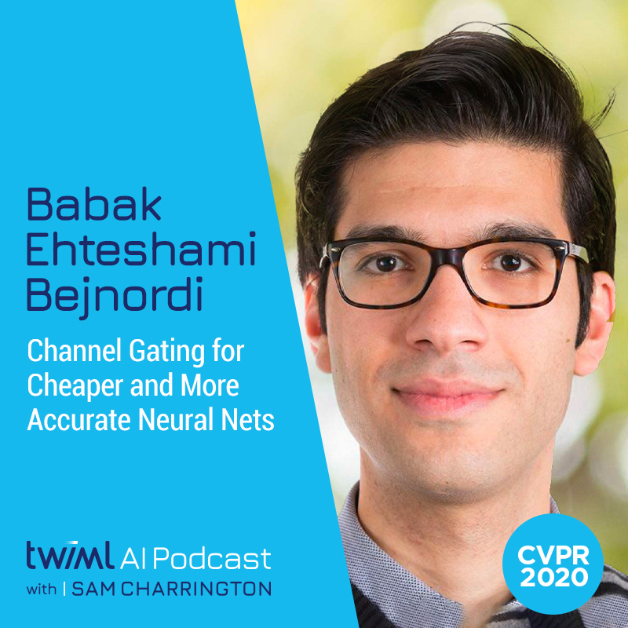

Talks and presentations
Podcast Interview with Sam Charrinton at TWiML AI
Date: June 22, 2020
Location: TWiML AI Podcast
Title: Channel Gating for Cheaper and More Accurate Neural Nets

Public PhD defense at Radboud University
Date: December 20, 2017
Location: Aula Radboud University, Comeniuslaan 2, Nijmegen
Title: Histopathological diagnosis of breast cancer using machine learning
Invited talk at the Broad Institute of MIT and Harvard
Date: November 16, 2016
Location: Broad Institute of MIT and Harvard, Cambridge, Massachusetts
Title: Practical recommendations for training convolutional neural networks